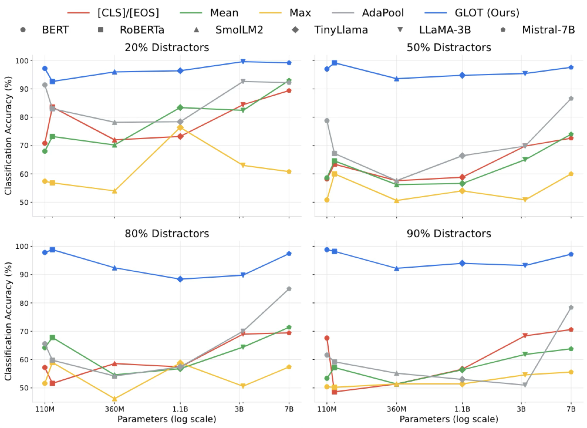
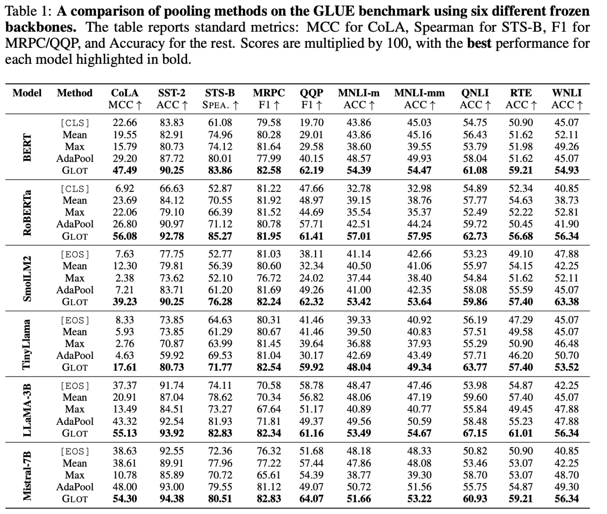

Instead of discarding multi-hop linguistic dependencies, GLOT explicitly models token interactions through a three-step framework.
We treat the hidden states \( \mathbf{X} = [\mathbf{x}_1, \dots, \mathbf{x}_L] \) from a frozen LLM as nodes. Edges are formed based on cosine similarity. To isolate the strongest semantic dependencies, we prune weak connections that fall below a threshold \( \tau \), creating a sparse latent token graph.
Tokens exchange information with their semantic neighbors via a \( K \)-layer message-passing Graph Neural Network. By aggregating neighborhood context \( \mathbf{a}_i^{(\ell)} \), GLOT captures complex dependencies that standard independent pooling cannot see, resulting in structurally refined tokens \( \mathbf{U} \).
Finally, we compute a learnable importance weight \( \pi_i \) for each refined token. A weighted sum collapses the graph into a single, robust sentence representation \( \mathbf{z} \). Because relational learning occurs before aggregation, GLOT knows exactly which tokens carry core meaning.
On a diagnostic task where 90% of tokens are random distractors, standard baselines (Mean, Max, AdaPool) collapse to random chance. GLOT maintains >97% classification accuracy.

GLOT consistently outperforms mean, max, [CLS] and learnable pooling (AdaPool) across both encoder-only (BERT, RoBERTa) and decoder-only (Llama, Mistral) models.

Compared to baseline fine-tuning techniques, GLOT achieves competitive performance while drastically reducing both memory footprint and runtime.
If you find our work useful, please cite our paper:
@inproceedings{mantri2026towards,
title={Towards Improved Sentence Representations using Token Graphs},
author={Krishna Sri Ipsit Mantri and Carola-Bibiane Sch{\"o}nlieb and Zorah L{\"a}hner and Moshe Eliasof},
booktitle={The Fourteenth International Conference on Learning Representations},
year={2026},
url={https://openreview.net/forum?id=stMX9KBhUI}
}